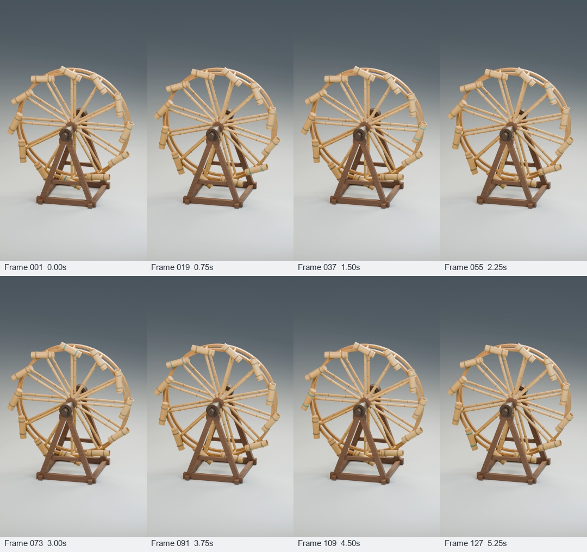

Milestone 1A · 6 seconds · 24 fps · 1080 × 1920 · silent
A dry geometry test. The teal bindings mark tube 01: follow it as the right side rises. All containers rotate with the rim; none pivot independently.
The source, editable scene, and all original PNG frames are saved locally. Collection, retention, discharge, river drive, and a dated historical reconstruction remain unverified.
Open corrected video · Editable scene · Verification record · Source
